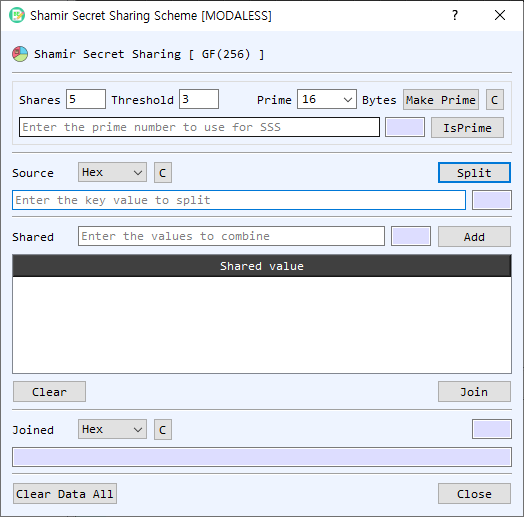

Shamir Secret Sharing Dialog Guide
The Shamir Secret Sharing [GF(256)] dialog splits a secret into shares and reconstructs it from a threshold number of shares. Use the same prime value and threshold settings when splitting and joining.

Figure 1. Shamir Secret Sharing dialog. The upper section splits a source value into shares; the lower section combines selected shares to reconstruct the value.
Screen Areas
- Shares — Number of shares to create. The default is
5. - Threshold — Minimum number of shares required to reconstruct the secret. The default is
3. - Prime — Prime value used by the sharing operation, entered as hexadecimal. The selected Bytes value sets the size for Make Prime; available choices are 8, 16, 32, 64, 128, and 256 bytes. C clears the prime. IsPrime checks whether the entered value is prime.
- Source — Secret value to split. Select its input representation (Hex, String, or Base64), enter the value, and select Split. C clears the source; the adjacent field shows its length.
- Shared — Enter a share value in hexadecimal and select Add to append it to the share list. The adjacent field displays its length.
- Shared value list — Shows the shares available for reconstruction. Right-click a row to copy or delete it. Clear removes all listed shares.
- Join — Reconstructs the original secret from the listed shares using the configured threshold and prime.
- Joined — Displays the reconstructed value using the selected representation (Hex, String, or Base64). C clears the result; the adjacent field shows its length.
- Clear Data All / Close — Clears the values and share list, or closes the dialog.
Split a Secret
- Set Shares to the total number of shares to generate and Threshold to the minimum number needed to reconstruct the secret.
- Enter a prime in Prime, or choose a byte size and select Make Prime. Use IsPrime to check a manually entered value.
- Enter the secret in Source and select its representation.
- Select Split. The generated share values appear in the list. Save or copy the shares and keep the threshold and prime information available for reconstruction.
Join Shares
- Enter the same Prime and Threshold used for splitting.
- Add share values to the Shared field one at a time, selecting Add after each. Shares must be hexadecimal values.
- Add at least the threshold number of shares, then select Join.
- Read the reconstructed secret in Joined and choose the desired output representation.
Notes
- The prime must be greater than the source value. An insufficient prime causes the split operation to fail.
- Reconstruction requires at least the configured threshold number of shares; the dialog also requires at least two shares in the list.
- Duplicate shares are rejected when adding them. Use the share list's right-click menu to copy or remove a share.
- Shares and the original secret are sensitive. Store shares separately and clear the dialog when finished.